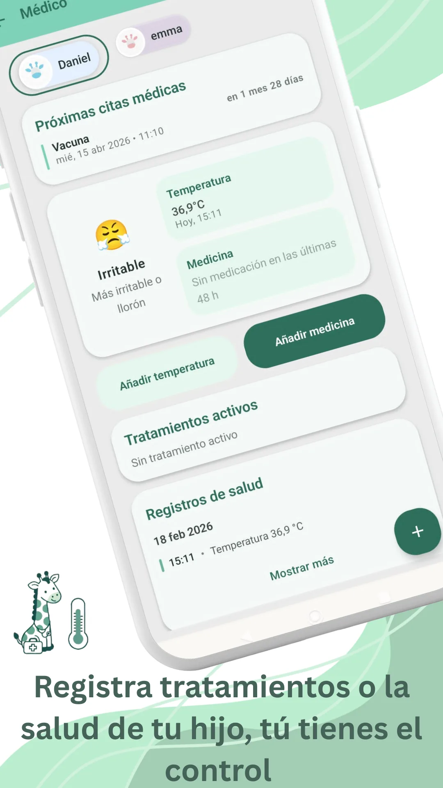

En esta página · 7 secciones
En resumen
Lo que más me ayudó fue entender que el llanto dura segundos y la protección años: las vacunas pasan controles muy estrictos antes y después de aprobarse, las reacciones habituales (dolor o enrojecimiento en la zona del pinchazo, algo de fiebre) suelen ser leves, y las dudas se resuelven hablándolas con el pediatra.
Recuerdo perfectamente la primera vez que llevé a mi bebé a vacunar. Era diminuto. Apenas tenía unas semanas. Yo lo miraba mientras esperaba en la consulta y pensaba: "¿De verdad es necesario tan pronto?" "¿Y si le pasa algo?"
Nadie te habla del nudo en el estómago que sientes cuando sabes que va a llorar y tú, aun así, has dicho que sí. Pero también nadie te habla de lo tranquila que te vas a casa después.
Proteger también es tomar decisiones difíciles
Cuando eres madre o padre, entiendes algo muy rápido: proteger no siempre significa evitar que lloren. A veces significa permitir un pequeño malestar hoy para evitar algo mucho más grande mañana.
Las vacunas funcionan como un entrenamiento para su sistema inmunitario. El cuerpo del bebé aprende a reconocer virus y bacterias sin tener que sufrir la enfermedad real. Es como un simulacro de incendio: no hay fuego de verdad, pero el cuerpo aprende qué hacer si algún día lo hay.
Y eso cambia la perspectiva.
Sigue todo en Raffy
Sueño, tomas, crecimiento y rutinas en una sola app gratuita para Android.

Lo que me ayudó a decidir
Me ayudó entender que muchas de las enfermedades que hoy casi no vemos no desaparecieron por casualidad. La polio no dejó de paralizar niños porque sí. La meningitis no se volvió menos peligrosa de repente.
Desaparecieron de nuestra vida cotidiana porque durante años las familias vacunaron. Y también entendí algo importante: no ver una enfermedad no significa que no exista. Significa que la prevención está funcionando.
El momento del pinchazo
No voy a mentir. Llora. Y a ti se te parte algo por dentro. Pero el llanto dura segundos. El abrazo dura más. Y la protección dura años.
Después puede aparecer algo de fiebre, un poco de irritabilidad, quizá enrojecimiento en la zona del pinchazo. Son reacciones frecuentes y suelen ser leves. A mí me ayudó saber que eso es señal de que el sistema inmune está trabajando.
Los efectos graves son extremadamente raros. Y las vacunas pasan por controles muy estrictos antes de aprobarse y mientras están en uso. En España, el calendario está revisado por organismos como el Ministerio de Sanidad y por sociedades científicas como la Asociación Española de Pediatría. No es algo improvisado ni basado en modas.
Eso me dio calma.
No solo es por tu hijo
Hubo algo que me tocó especialmente cuando lo entendí bien. Vacunar no protege solo a tu bebé. Protege al recién nacido que todavía es demasiado pequeño para vacunarse. Protege al niño con defensas bajas. Protege a personas que no pueden recibir determinadas vacunas por motivos médicos.
Es una decisión individual que tiene un impacto colectivo. Y eso, cuando lo piensas, es poderoso.
Las dudas son normales
Vivimos en una época en la que recibimos información constantemente. Opiniones, vídeos, testimonios: algunos bien intencionados, otros no tanto.
Yo también tuve dudas. Y lo mejor que hice fue hablarlas con el pediatra. Preguntar sin miedo. Escuchar respuestas basadas en evidencia. Cuando la información viene de fuentes oficiales y profesionales sanitarios, la decisión se vuelve más clara.
No se trata de no cuestionar. Se trata de cuestionar bien.
Lo que siento ahora
Hoy, mirando atrás, no recuerdo exactamente cuántas vacunas llevaba a los seis meses. No recuerdo qué día concreto tuvo fiebre.
Pero sí recuerdo la tranquilidad de saber que estaba protegido frente a enfermedades que, hace no tanto, cambiaban vidas para siempre.
Vacunar no es un acto automático. Es un acto consciente. Es pensar más allá del momento incómodo. Es elegir prevención. Es elegir futuro.
Y si estás leyendo esto antes de la primera vacuna, quiero decirte algo que me habría gustado escuchar a mí: es normal que te duela más a ti que a él. Es normal que dudes. Y también es normal que, después, sientas que hiciste lo correcto.
Porque proteger también es amar a largo plazo.
Fuentes
- Asociación Española de Pediatría · En FamiliaSeguridad de las vacunas
- Asociación Española de Pediatría · Comité Asesor de VacunasDudas sobre la seguridad de las vacunas
- Asociación Española de Pediatría · Comité Asesor de VacunasFiebre tras vacunación
- Organización Mundial de la SaludVacunas e inmunización: ¿qué es la vacunación?
Revisamos este artículo con estas fuentes el 26 oct 2026. Es contenido educativo, no consejo médico. Política editorial